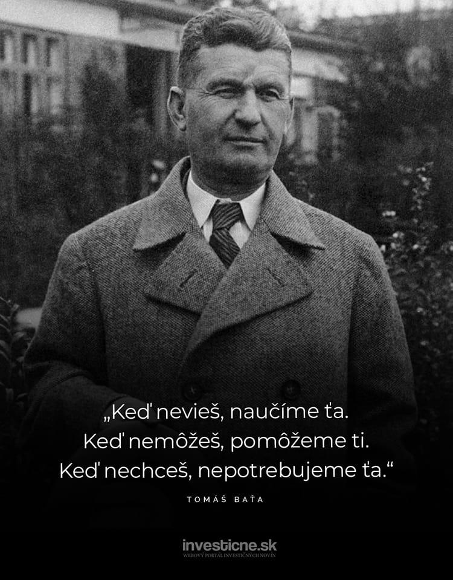

rok 2025
1

Rok 2025 je výjimečný nejen pro město Zlín, ale i pro celou Českou republiku. Připomínáme si totiž 100 let od založení slavné Baťovy školy práce – unikátního vzdělávacího systému, který spojil technické vzdělání, praktickou výuku a výchovu charakteru v jeden komplexní a pokrokový celek. Toto kulaté výročí se stalo impulsem pro širokou škálu oslav, které mají za cíl nejen připomenout slavnou minulost, ale i zhodnotit význam odkazu školy pro dnešní společnost. V rámci oslav se pořádají tematické výstavy o historii školy – například v Památníku Tomáše Bati, v Muzeu jihovýchodní Moravy nebo v prostorách samotných školních institucí. Zde si návštěvníci mohou prohlédnout historické dokumenty, fotografie, modely internátů a učeben i předměty každodenního života studentů. Konají se také besedy s pamětníky a odborníky, kteří sdílejí své osobní příběhy a poznatky o výjimečnosti systému, který Baťa vybudoval. Mnozí absolventi školy dnes patří k respektovaným odborníkům a podnikatelům a s hrdostí vzpomínají na základy, které jim právě tato škola poskytla. Kromě toho vznikají nové publikace, filmové dokumenty a podcasty věnované historii školy, jejím zakladatelům a přínosu baťovské filozofie pro vzdělávání i podnikání. Do oslav se aktivně zapojují i současní studenti prostřednictvím edukačních programů, soutěží a projektů, které je vedou k hlubšímu porozumění hodnotám, na nichž Baťova škola stála – pracovitost, spolupráce, odpovědnost a inovace.
2
I po uplynutí celé jedné století zůstává základní myšlenka Baťovy školy živá a inspirativní. Propojení teorie s praxí, důraz na morální kvality a osobní rozvoj studentů, ale také spojení školy s reálným podnikatelským prostředím – to vše je dnes aktuálnější než kdy dřív.  Mnoho současných vzdělávacích institucí, inovačních center i podnikatelských inkubátorů se hlásí k baťovským hodnotám a aktivně je rozvíjí. Práce studentů na reálných projektech, zodpovědnost za vlastní úkoly, učení se skrze zkušenost a orientace na konkrétní výsledek – to jsou principy, které dnes stále více pronikají do moderní výuky. Školy navazující na Baťův odkaz často kladou důraz na tzv. měkké dovednosti – komunikaci, schopnost řešit problémy, práci v týmu, samostatnost i leadership. Všechny tyto oblasti Baťa systematicky podporoval už ve své době a považoval je za klíčové pro úspěšný profesní i osobní život. Také etika a odpovědnost v podnikání, které byly pilíři baťovské filozofie, si dnes nacházejí své místo – a to nejen ve výuce ekonomie, ale i v přístupu škol k výchově mladých lidí.
3
Moderní školy a vzdělávací programy dnes stále více pracují s principy, které Baťova škola uplatňovala už ve 20. a 30. letech 20. století. Zcela přirozeně se tak baťovská tradice promítá do současných přístupů, jako je projektové vyučování, duální vzdělávání nebo studentské firmy. Projektové vyučování dává studentům možnost řešit reálné problémy, navrhovat vlastní řešení a prezentovat výsledky své práce veřejnosti nebo odborníkům. Duální vzdělávání, které propojuje studium s praxí přímo ve firmách, odpovídá přesně tomu, co Baťa budoval ve svých závodech a školách. Studentské firmy pak dávají mladým lidem šanci vyzkoušet si podnikání v praxi a nést odpovědnost za vlastní nápady. Moderní technologie a digitální nástroje sice výuku proměňují, ale neztrácí se myšlenka, že student má být aktivní, samostatný, motivovaný a vedený k tvořivosti. V tom je duch Baťovy školy stále živý – nejde jen o výuku, ale o výchovu osobnosti a podporu celostního rozvoje člověka. Příkladem této filozofie je například Univerzita Tomáše Bati ve Zlíně, která nese jméno zakladatele školy a aktivně rozvíjí aplikovaný výzkum, podnikatelské nápady studentů a úzkou spolupráci s průmyslovou praxí. I zde se projevuje, že baťovský přístup není záležitostí minulosti – ale živou inspirací pro budoucnost.